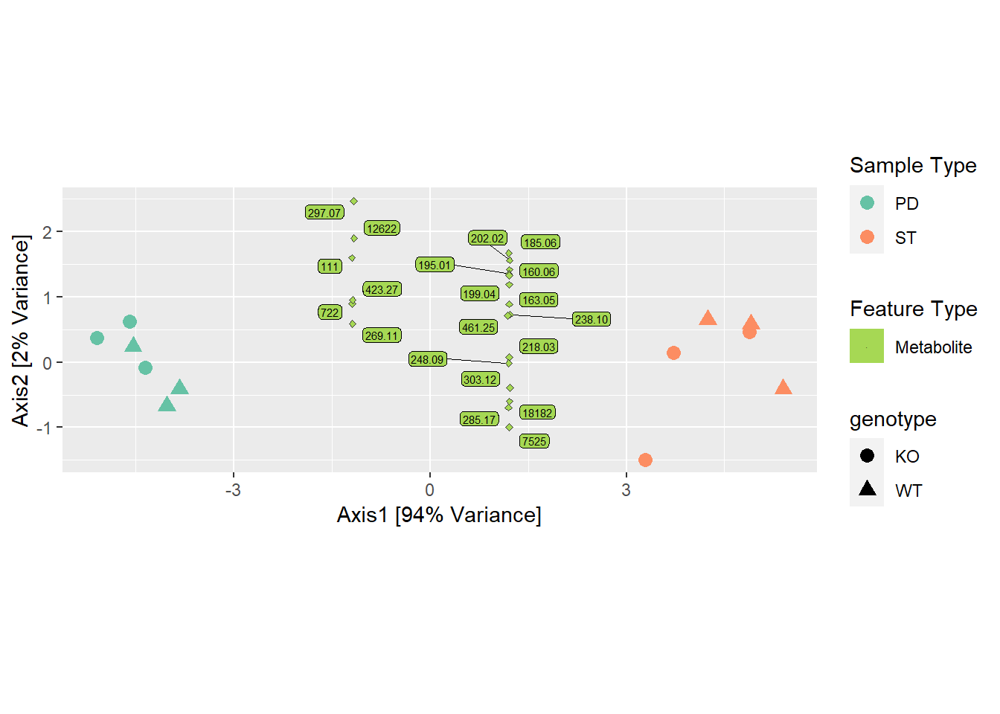
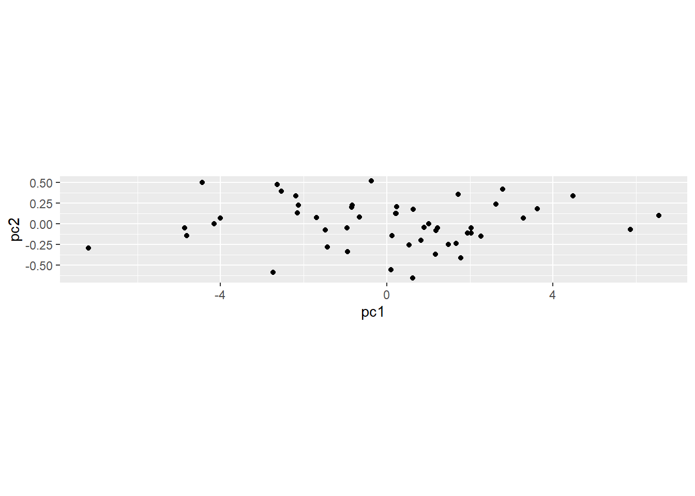

Chapter 10 Ejercicios
Cree una primera matriz a de datos bivariados altamente correlacionados.
mu1 = 1; mu2 = 2; s1=2.5; s2=0.8; rho=0.9;
sigma = matrix(c(s1^2, s1*s2*rho, s1*s2*rho, s2^2),2)
p_load("MASS")
sim2d = data.frame(mvrnorm(50, mu = c(mu1,mu2), Sigma = sigma))
svd(scale(sim2d))$d## [1] 9.651882 2.200265svd(scale(sim2d))$v[,1]## [1] 0.7071068 0.7071068ggplot(data.frame(sim2d),aes(x=X1,y=X2)) +
geom_point()
respc=princomp(sim2d)
dfpc = data.frame(pc1=respc$scores[,1],
pc2 = respc$scores[,2])
ggplot(dfpc,aes(x=pc1,y=pc2)) +
geom_point() + coord_fixed(2)
Los datos originales que se muestran en el diagrama de dispersión (A) y el gráfico obtenido usando la rotación de componentes principales (B).